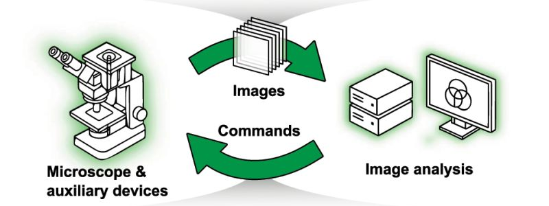

Smart microscopy: a review of current implementations and a roadmap for interoperability

Smart microscopy is a rapidly growing field, but it is not yet a discipline in its own right. Researchers working on adaptive imaging workflows often belong to different communities, from cell biology to optics to computer science, and rarely meet at the same conferences. Even basic terminology is not standardized, resources and implementations are scattered, and much of the practical know-how remains hidden inside individual labs or proprietary systems. This fragmentation slows progress and limits adoption.
A new review article in Methods in Microscopy, authored by over 30 colleagues from the Smart Microscopy Working Group (SMWG), sets out to address this. The group surveys the current landscape of smart microscopy, collects and compares the technical details of different approaches, and proposes a framework for interoperability.
To organize the wide range of existing strategies, the article groups smart microscopy approaches into four categories based on the intent behind their decision-making logic: event-driven (responding to detected biological events such as cell division or rare phenotypes), outcome-driven (steering experiments toward a desired biological outcome, for example using optogenetics), quality-driven (optimizing imaging parameters to reduce phototoxicity, correct aberrations, or improve signal-to-noise), and information-driven (maximizing the information gained per acquisition, for instance by directing the microscope to undersampled regions). These categories are not mutually exclusive but serve as a shared vocabulary to describe what is currently a very heterogeneous field. Alongside these use cases, the article compiles both academic and commercial implementations, covering the technical details of a variety of hardware setups and software strategies.
On the interoperability side, the article identifies a set of concrete barriers. The specificity of hardware setups, the lack of standardized microscope control APIs and metadata formats, and vendor lock-in make it difficult for labs to scale smart microscopy workflows across platforms. Incompatible software, closed firmware, and proprietary file formats complicate automation and integration, hindering reproducibility and forcing researchers to recreate similar solutions for each unique setup. The authors also point to cultural and organizational challenges: misaligned incentives between academia, industry, and infrastructure providers, limited public forums for exchange between academic and commercial developers, and academic incentive structures that do not sufficiently reward the collective development and maintenance of open-source tools.
The article outlines a vision for an interoperable smart microscopy ecosystem based on a modular architecture, where standardized experiment descriptions (e.g. useq-schema) and open data formats (e.g. OME-Zarr) allow the integration of diverse microscopes, analysis tools, and user interfaces. In this vision, core components such as segmentation, tracking, and experiment logic are decoupled from specific hardware, enabling reuse across platforms, flexible feedback-driven acquisition strategies, and cross-platform reproducibility.
Realizing this will require joint effort. The article concludes with a call to action directed at academic labs, industry partners, and institutions including funders and publishers, to jointly invest in open standards, shared resources, and long-term sustainability of community tools. Over the next year, the SMWG plans to focus on three priorities: publishing baseline interoperability specifications, curating an open and evolving collection of shared implementations, datasets, and workflows, and organizing community events to facilitate dialogue across academia, industry, and research infrastructures.